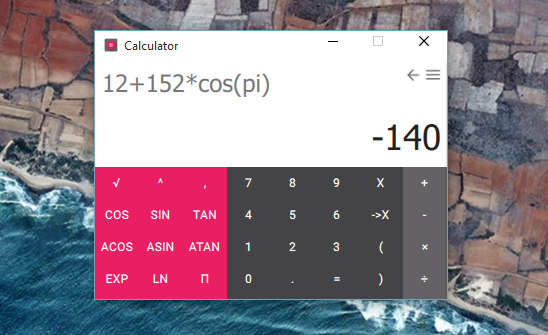

Papyros Calculator
Papyros Calculator is a calculator application created for the Linux distribution Papyros. It is written in Qt/QML, with their QML-Material framework. This projects has two goals : provide a user-friendly, but full-featured calculator, and a modern design.
Screenshots
Download
Changelog
0.1.1
- Fixed dp issue
- Portable Version
0.1
- First release
- Automatic calculation